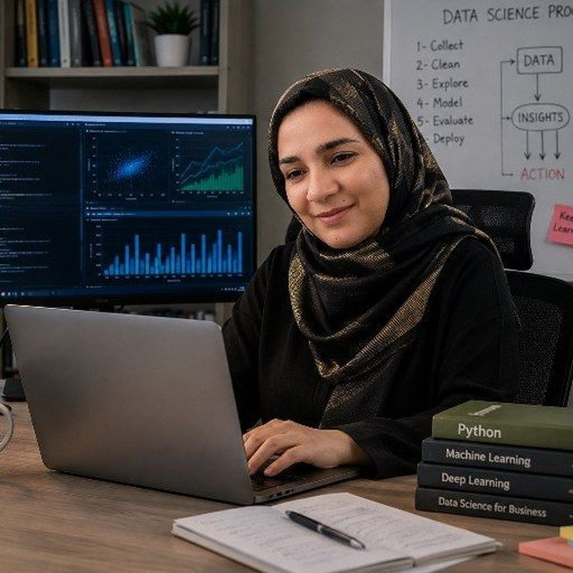
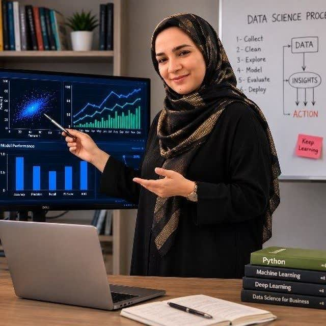

۱۷ سال تجربه در طراحی انبار داده، ETL، مدلهای OLAP و داشبوردهای مدیریتی برای حوزههای درمان و سلامت بیمارستانی، گردشگری و هتلداری، مالی و اداری، خردهفروشی، منابع انسانی و CRM/مارکتینگ و فروش.

من متخصص داده و هوش تجاری با تجربه در صنعت گردشگری، بیمارستانی، مالی و اداری و ریتیل (خردهفروشی) هستم. در حوزههای متنوعی از قبیل پایگاههای داده، برنامهنویسی، هوش مصنوعی و تحلیل داده، همواره در تلاش برای ارائه راهکارهای بهینه و نوآورانه جهت بهبود عملکرد سازمانها بودهام.
به صورت حرفهای با SQL Server کار میکنم و با بهینهسازی کوئریها آشنا هستم؛ تا حدودی با وظایف DBA نیز آشنایی دارم. برای ETL در چندین پروژه از SSIS استفاده کردهام و سپس با SSAS دادهها را به OLAP منتقل کرده و با مفاهیم پارتیشنبندی نیز کار کردهام. برای مصورسازی به صورت حرفهای با Power BI کار کردهام و با DAX هر فرمولی که به KPI میرسد را به دست میآورم.
در زمینه تحلیل داده از الگوریتمهای یادگیری ماشین با پایتون استفاده کردهام و برای نمونه تحلیل RFM مشتریان را پیادهسازی کردهام. در سال گذشته با Ollama و مدلهای زبانی آفلاین توانستهام یک چتبات سازمانی طراحی کنم که به پایگاه داده SQL Server متصل میشود، و به دنبال راههای بهینه برای اتصال OLAP به هوش مصنوعی هستم.
قطعاً هر سازمانی با توجه به مشخصاتش در زمینه هوش تجاری سولوشن خودش را دارد؛ من با تجربه بالغ بر ۱۷ سال برای رسیدن به این هدف به سازمانها کمک میکنم.

دانشگاه امام رضا (ع)
پایاننامه: پیشبینی مرگومیر بیماران کرونایی با تکنیکهای یادگیری ماشین
از لایه داده خام تا داشبورد مدیریتی و مدل هوش مصنوعی — یک زنجیره کامل.
در هر حوزه، شاخصهای کلیدی عملکرد (KPI) زیر را با SQL، SSAS و DAX تعریف، محاسبه و در داشبورد مدیریتی ارائه کردهام.
تحلیل رفتار مشتری، بخشبندی، قیف فروش و اثربخشی کمپینها.
داشبوردهای درمان، بستری، سرپایی و پاراکلینیک بر پایه دادههای HIS.
تحلیل رزرو آنلاین، کانالهای فروش و عملکرد هتلها.
داشبورد درآمد، هزینه، مطالبات و انحراف بودجه برای مدیریت ارشد.
تحلیل فروش، موجودی و سبد خرید در سطح شعبه و کالا.
داشبورد نیروی انسانی، حضور و غیاب، بهرهوری و هزینه پرسنلی.
منتخبی از پروژههای هوش تجاری، تحلیل داده و هوش مصنوعی در صنایع مختلف.
طراحی و پیادهسازی کلیه داشبوردهای مالی و درمانی بیمارستان: از استخراج داده از HIS با SSIS تا مدل OLAP و گزارشهای مدیریتی در Power BI.
ساخت چتبات سازمانی با Ollama و مدلهای زبانی آفلاین که به پایگاه داده SQL Server متصل میشود و بدون خروج داده از سازمان به سؤالات کاربران پاسخ میدهد.
طراحی گزارشها و داشبوردهای فروش و رزرو برای دو پلتفرم بزرگ گردشگری، به همراه کار روی فرایندهای سازمانی در بستر BPMS.
مشارکت در نوشتن نسخه جدید نرمافزار HIS بیمارستان رضوی و طراحی زیرسیستمهای کلیدی، در کنار پشتیبانی HIS و MIS.
پاکسازی و مهندسی ویژگی روی دادههای بالینی بیماران و آموزش مدلهای طبقهبندی برای پیشبینی ریسک مرگومیر، همراه با ارزیابی دقت مدلها.
پیادهسازی تحلیل RFM با پایتون برای شناسایی مشتریان وفادار، در معرض ریزش و کمارزش، و تبدیل خروجی به داشبورد قابل استفاده تیم فروش و مارکتینگ.
طراحی گزارشها و شاخصهای مدیریتی روی دادههای سازمانی در مقیاس بزرگ، با تمرکز بر شاخصهای مالی و اداری.
پیادهسازی چرخه کامل هوش تجاری: استخراج و پاکسازی داده، مدلسازی، تعریف KPI و ارائه داشبورد برای تیم مدیریت.
برای دیدن تصویر در اندازه کامل روی هر داشبورد کلیک کنید. دادههای نمایشدادهشده نمونهسازیشدهاند و اطلاعات محرمانه سازمانها در آنها وجود ندارد.
آماده همکاری در پروژههای هوش تجاری، داشبوردسازی، تحلیل داده و راهکارهای هوش مصنوعی سازمانی هستم.